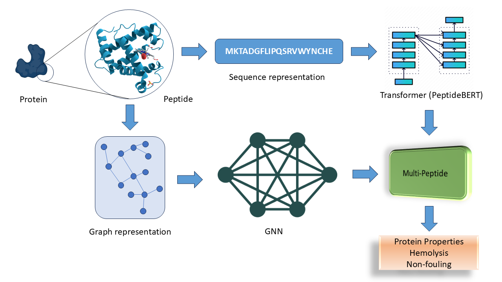

MOFGPT: Generative Design of Metal-Organic Frameworks using Language Models
PPO-driven generative transformers for de novo MOF sequence design and property-aware synthesis.
LLM-guided Chemical Process Optimization with a Multi-Agent Approach
Multi-agent LLM framework for modular chemical process optimization tasks.
Large Language Model Agent for Modular Task Execution in Drug Discovery
Agentic pipeline integrating LLMs, RAG, and property-prediction models for autonomous drug discovery.
Preprints & Under Review
Meta-Learning for Cross-Task Generalization in Protein Mutation Property Prediction
Meta-learning framework enabling few-shot generalization across protein mutation prediction tasks.
Graph-Based Kirchhoff Modeling of Non-Ohmic Electron Transport in Self-Assembled Nanonecklace Networks
Graph-based modeling of electron transport in self-assembled nanonecklace networks.
Work history
Founding Engineer
- End-to-end ownership of ML, systems, and deployment for an AI-for-fintech product.
- Shipped through multiple 0→1 pivots across engineering, product, and go-to-market.
Machine Learning Engineer
- Multi-agent protein engineering pipelines integrating ESM, ProteinMPNN, AlphaFold, and RFdiffusion.
- Built a modular model zoo and LangChain interface connecting generative and predictive workflows for wet-lab scientists.
Graduate Researcher
- Multi-Peptide (JCIM 2024): Multimodal peptide-property predictor combining sequence and AlphaFold-generated structures.
- Multimodal Catalysis (Nature MI 2024): Generative LLM + contrastive transformer-GNN for adsorption energy without crystal-structure data.
- MOFGPT (JCIM 2025): RL-driven generative transformers for de novo MOF sequence design.
- Drug Discovery Agent (JCIM 2026): Agentic pipelines with LLMs, RAG, and property-prediction models.
- Meta-learning preprint for cross-task protein mutation prediction (under review, ACS JCIM).
- Mentored junior researchers; founded DreamPods, an LLM+TTS science communication initiative.
MITACS Globalink Research Intern
- LSTM and Neural CDE surrogates for hydro-processing flow-rate optimization on real-time refinery data.
- Presented results at the Three-Minute Thesis symposium to 50+ faculty. Watch talk
Research Fellow
- ML surrogates for stiff chemical kinetics, reducing CFD simulation time by 90% for reactor design.
Machine Learning Intern
- Deployed image recognition on AWS SageMaker for automated appliance diagnostics from user photos.
Beyond the papers
Science communication, education tools, and applied research projects.
DreamPods
Founded an 11-person CMU team building LLM+TTS pipelines that turn scientific material into accessible audio.
GenAI Education Platform
PDF to lecture video pipeline using multimodal LLMs for automated STEM content creation.
Character-Consistent Diffusion
CMU Generative AI course, Best Poster Award. Coherent visual storylines via latent alignment.
Refinery Process Optimization
MITACS @ UAlberta. LSTM/Neural CDE surrogates with 97% accuracy on real-time plant data.
Awards & service
ACS JCIM Peer Reviewer
Reviewing manuscripts on AI-driven molecular modeling and chemical informatics. 2025 to present.
MITACS Globalink Scholar
International merit-based research scholarship, University of Alberta. 2022.
Young Research Fellowship
Selected among top undergraduates at IIT Madras for early research. 2021.
Best Poster Award
Generative AI course, Carnegie Mellon University. 2024.